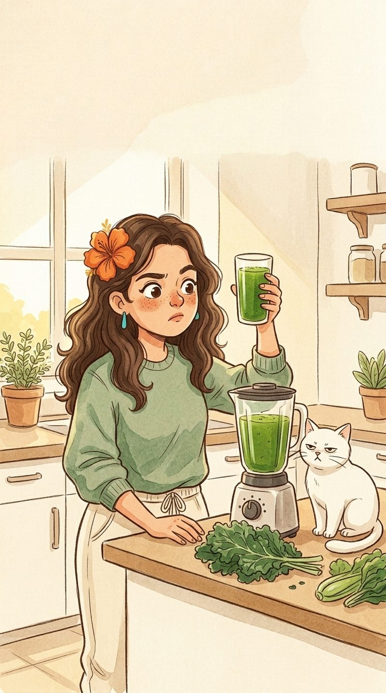

Desintoxica o quê, exatamente?
Confesso: eu caí. Vi uma moça muito bronzeada dizendo que um suco verde “limpava as toxinas” e no mesmo dia lá estava eu, com o liquidificador cheio de couve, pepino, gengibre e esperança.
O resultado tinha a cor de um lago e o cheiro de grama cortada. O Biscoito, que sobe em qualquer bancada atrás de comida, subiu, cheirou e deu dois passos para trás. Um gato que come plástico se recusou.
Eu tomei. Não morri. Também não me senti “limpa”. Então fiz a pergunta que a Tina faria: desintoxica o quê, exatamente? Quais toxinas? Medidas como? Saindo por onde?
O vídeo não dizia. Fui ver quem diz.

O que a ciência mostra
- Seu corpo já tem um sistema de limpeza, e ele é ótimo. Fígado, rins, intestino, pulmões e pele trabalham 24 horas por dia, de graça, para eliminar o que o corpo não usa.
- Não há provas de que dietas e sucos “detox” eliminem toxinas. Uma revisão crítica publicada em 2015 no Journal of Human Nutrition and Dietetics não encontrou evidência convincente de que dietas detox removam toxinas do corpo. Os poucos estudos existentes tinham problemas de método e nem diziam quais toxinas seriam eliminadas.
- O peso que “sai” some de volta. Quando alguém emagrece num detox, é principalmente porque comeu muito pouco por alguns dias. O peso tende a voltar quando a pessoa volta a comer normalmente.
- Suco verde pode ser gostoso. Verduras e frutas têm vitaminas, minerais e fibras. Só não têm superpoderes. Comer as frutas e verduras inteiras costuma manter mais fibra do que coar o suco.
Agora eu faço suco quando tenho vontade e chamo de suco, não de tratamento. O Biscoito continua recusando. Pelo menos ele é coerente. 🫀
Fontes
- Klein AV, Kiat H. Detox diets for toxin elimination and weight management: a critical review of the evidence. J Hum Nutr Diet, 2015. PubMed
- Macquarie University: revisão não encontra evidência para dietas detox. mq.edu.au (em inglês)
- Cornell University, Evidence-Based Living: “The Evidence on Detox Diets”. cornell.edu (em inglês)
A Clara é uma personagem e este blog é informativo. Ele não substitui uma consulta com profissional de saúde.